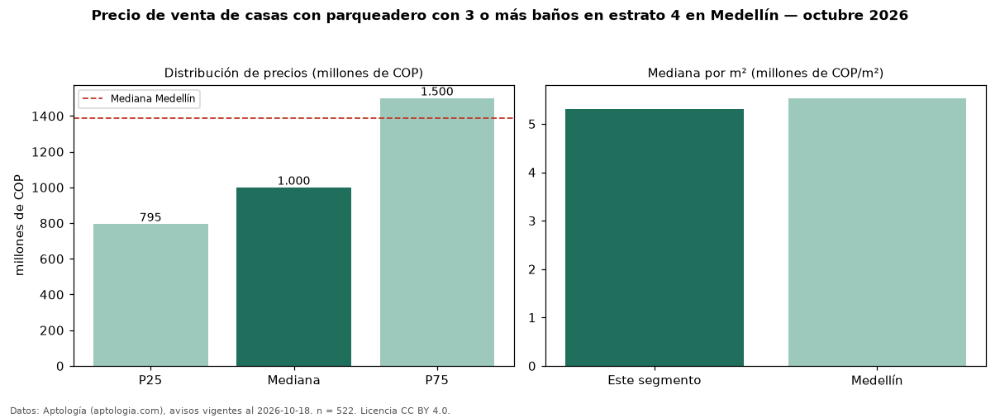

Precio de venta de casas con parqueadero con 3 o más baños en estrato 4 en Medellín — octubre 2026
COP 1,00 mil millones es el precio mediano de casas con parqueadero con 3 o más baños en estrato 4 en venta en Medellín (n = 522 avisos). Frente a la mediana de las casas con parqueadero en estrato 4 en venta de Medellín (COP 940 millones, n = 688), queda 6 % por encima; este segmento reúne el 76 % de esos avisos. Por metro cuadrado, la mediana es COP 5,31 millones/m² (n = 507), 1 % por debajo de las casas con parqueadero en estrato 4 en venta de Medellín (COP 5,38 millones/m²). El área mediana anunciada es 203 m². El segmento con más oferta es el de 3 o más habitaciones (518 avisos, mediana COP 995 millones). La administración mediana declarada es COP 469.000 al mes (n = 132). La mitad central de los avisos va de COP 795 millones a COP 1,50 mil millones (razón 1,9), una dispersión moderada. La mediana de todas las casas en venta de Medellín es COP 1,39 mil millones (−28 % de diferencia). Datos: Aptología (aptologia.com), CC BY 4.0 — https://www.aptologia.com/venta/medellin. Archivos: PDF, CSV con las cifras y gráfica PNG.

| Avisos únicos | 522 |
|---|---|
| Percentil 25 | COP 795.000.000 |
| Mediana | COP 1.000.000.000 |
| Percentil 75 | COP 1.500.000.000 |
| Mediana por m² | COP 5.305.555 |
Fuente: avisos vigentes de portales inmobiliarios recopilados por Aptología, deduplicados (mínimo 30 avisos únicos por celda). Precios pedidos, no cerrados. Fecha: 2026-10-18.